MANUAL GEARBOX ML6C
- Path
- Descriptions > 21 GEARBOX UNIT > 2110 MANUAL GEARBOX WITH DIFFERENTIAL > MANUAL GEARBOX ML6C
- Kind
- system description
- Applies to
- engines: 2.2 16V JTD; all production periods
- Interactive page
- https://sloeber94.github.io/elrnDB-fUlss/en/#/179006633
Applies to: engines: 2.2 16V JTD; all production periods
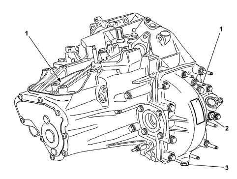
- 1 - identification plate
- 2 - oil filler plug
- 3 - oil drain plug
Introduction
The ML6C gearbox is a manually operated transverse manual gearbox with 6 forward speeds plus reverse, all with synchromesh, producing a torque of 350 Nm and operated by means of Bowden cables.
The following diagram shows a cross section through the gearbox.
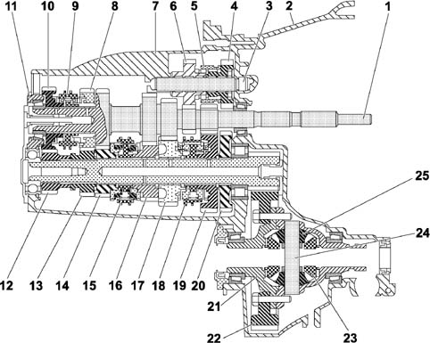
- 1 - main shaft
- 2 - bellhousing
- 3 - reverse shaft
- 4 - reverse drive gear
- 5 - reverse synchronizer
- 6 - reverse intermediate gear
- 7 - gearbox casing
- 8 - 5th speed drive gear
- 9 - 5th and 6th speed synchronizer
- 10 - 6th speed drive gear
- 11 - gearbox casing rear cover
- 12 - 6th speed driven gear
- 13 - 5th speed driven gear
- 14 - 4th speed driven gear
- 15 - 3rd and 4th speed synchronizer
- 16 - 3rd speed driven gear
- 17 - 2nd speed driven gear
- 18 - 1st and 2nd speed synchronizer
- 19 - 1st speed driven gear
- 20 - reverse driven gear
- 21 - differential housing
- 22 - ring gear
- 23 - differential gears
- 24 - satellite carrier
- 25 - satellite gears
The ML6C gearbox can be broken down into 4 different assemblies
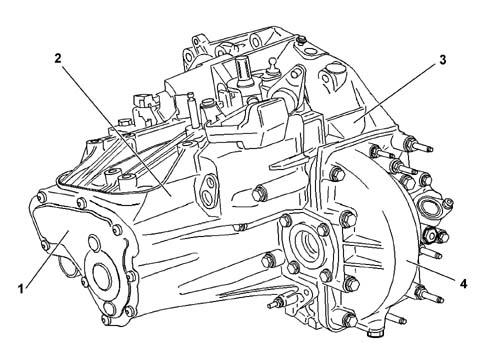
- 1 - rear cover
- 2 - gearbox gear casing
- 3 - clutch casing
- 4 - differential housing
DESCRIPTION OF COMPONENTS
Main shaft
The main shaft is made up of a single part which contains:
- the 1st, 2nd, 3rd and 4th speed drive gears and ;
- the reverse drive gear;
- the teeth for fitting drive gears for 5th and 6th speeds and the synchronizer;
- the teeth for fitting the clutch assembly.
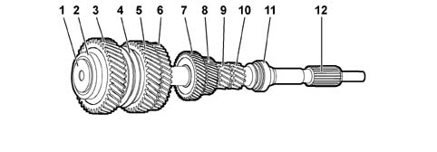
- 1 - special screw
- 2 - thrust bearing
- 3 - 6th speed drive gear
- 4 - 5th and 6th speed synchronizer
- 5 - 5th speed drive gear
- 6 - 4th speed drive gear
- 7 - 3rd speed drive gear
- 8 - 2nd speed drive gear
- 9 - 1st speed drive gear
- 10 - reverse drive gear
- 11 - thrust bearing
- 12 - the teeth for fitting the clutch assembly
There is a special screw at the rear end of the shaft which is designed to keep the bearing and the gears in contact.
There is an opening in this screw to allow oil to flow through and lubricate the 5th and 6th speed gears.
The special screw should be replaced each time the main shaft assembly is dismantled.
The teeth for fitting the clutch assembly are at the other end of the main shaft.
The main shaft is supported by two thrust bearings with conical rollers.
The shaft clearance is adjusted by means of shims and should be between 0.06 and 0.15 mm.
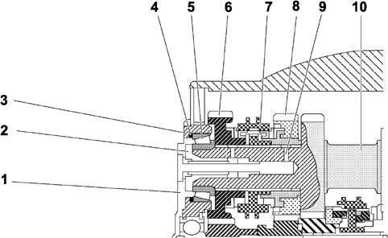
- 1 - cover
- 2 - special screw
- 3 - gearbox casing
- 4 - adjustment shims
- 5 - thrust bearing
- 6 - 6th speed drive gear
- 7 - synchronizer
- 8 - 5th speed drive gear
- 9 - lubrication ports
- 10 - main shaft
The 5th and 6th speed gears have a groove and radial openings that allow the lubrication of the synchronizers.
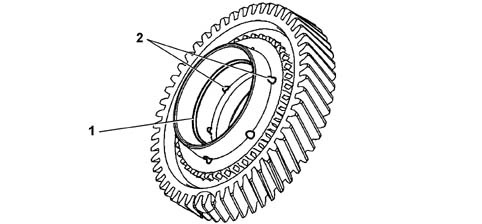
- 1 - lubrication groove
- 2 - lubrication ports
LAYSHAFT
The layshaft comprises a pinion on which the 1st, 2nd , 3rd and 4th speed gears are fitted. The 5th and 6th speed gears, unlike the others, are fitted in the toothed housing.
The layshaft is supported by means of roller bearings on the pinion side and a ball bearing on the cover side.
The shaft contains a duct for lubricating the gears
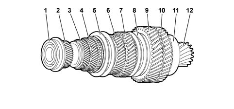
- 1 - ball bearing
- 2 - 6th speed gear
- 3 - 5th speed gear
- 4 - 4th speed gear
- 5 - 3rd and 4th speed synchronizer
- 6 - 3rd speed gear
- 7 - 2nd speed gear
- 8 - 1st and 2nd speed synchronizer
- 9 - 1st speed gear
- 10 - reverse gear
- 11 - roller bearing
- 12 - pinion
Reverse shaft
The reverse shaft consists of a bearing on which the drive gear, the synchronizer and the intermediate gear are fitted.
The gears freewheel on the roller chamber bearings. There is a roller bearing on the intermediate gear.
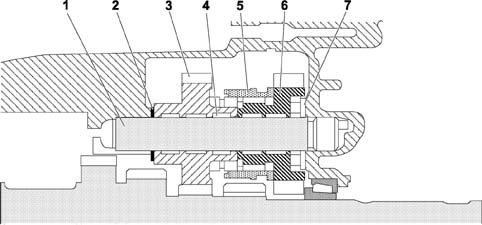
- 1 - reverse shaft
- 2 - adjustment shim
- 3 - drive gear
- 4 - roller chamber bearings
- 5 - synchronizer
- 6 - intermediate gear
- 7 - roller bearing
Synchronizers
There are four different types of synchronizer depending on where they are fitted.
- layshaft:
- 1st and 2nd speed synchronizer; triple cone type;
- 3rd speed synchronizer: double cone type;
- the 4th speed synchronizer: simple cone type.
- main shaft:
- 5th and 6th speed synchronizer: simple cone type, fitted on the main shaft to reduce gearbox noise
- reverse shaft:
- reverse synchronizer, fitted on the intermediate gear.
DIFFERENTIAL
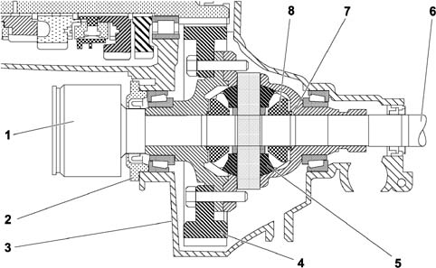
- 1 - driveshaft
- 2 - retaining plate
- 3 - differential housing
- 4 - ring gear
- 5 - satellite gears
- 6 - driveshaft
- 7 - shims
- 8 - planet gears
GEAR SELECTION CONTROL
The gear selection mechanism consists of a preassembled modular unit.
The gear selection is made by means of Bowden cables, a solution that reduces the vibrations transmitted by the gearbox to the control lever.
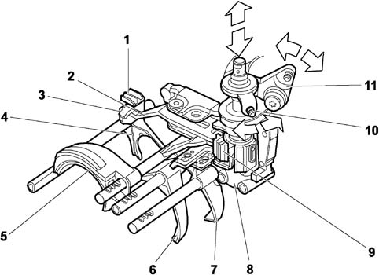
- 1 - reference for maintaining reverse gear position
- 2 - reverse engagement lever
- 3 - reference for reverse engagement sensor
- 4 - reverse engagement fork
- 5 - 5th and 6th speed engagement fork
- 6 - 3rd and 4th speed engagement fork
- 7 - 1st and 2nd speed engagement fork
- 8 - gear control linkage support
- 9 - reference for maintaining gear position
- 10 - gear engagement control lever
- 11 - gear selection control lever
Detail of reverse gear engagement mechanism (reverse not engaged position)
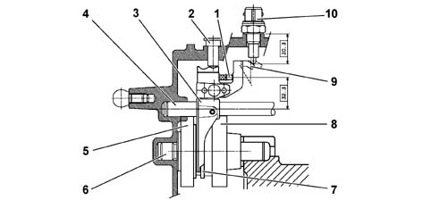
- 1 - control lever
- 2 - fork locked
- 3 - reverse engagement fork
- 4 - fork shaft
- 5 - intermediate gear
- 6 - reverse shaft
- 7 - synchronizer ring
- 8 - drive gear
- 9 - sensor reference
- 10 - reverse gear engaged sensor
Section of gear control linkage support in neutral position (3rd and 4th speeds engaged)
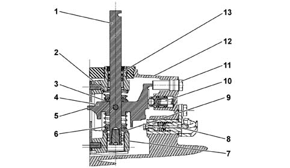
- 1 - gear control shaft
- 2 - 5th and 6th speed return spring
- 3 - control shaft locked
- 4 - gear engagement lever
- 5 - end of travel reference
- 6 - 1st and 2nd speed return spring
- 7 - gear control shaft support
- 8 - reverse gear engagement sensor
- 9 - ball bearing
- 10 - gear position maintenance device
- 11 - plug
- 12 - gearbox gear casing
- 13 - bush
GEARBOX GEAR CASING
The gear casing has a pressed steel cover to which a moulded bulkhead is secured in such a way that it also carries out the oil distribution duct function.
The oil flows to the duct by means of a channel housed in the casing.
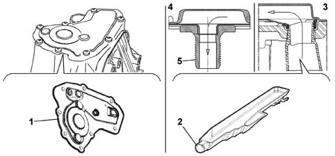
- 1 - cover
- 2 - channel
- 3 - channel connection diagram
- 4 - diagram showing connection to main shaft
- 5 - main shaft special screw